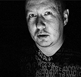
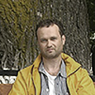
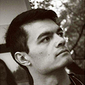

Жюри

Артем чернов
Руководитель проекта «Фотополигон».
Создатель учебного курса «Фотокомпозиция
для блоггеров».
Создатель семинара-тренинга «Люди
в кадре» для жанровых и репортажных
фотографов.
Оператор-постновщик. Фотожурналист
многих изданий.
Обладатель профессиональных премий
в области фотографии и фотожурналистики.
Нина Ай-Артян
Профессиональный фотограф.
Победа на Фестивале Уличной
Фотографии-2014.
1-е место в жанре НЮ в профессиональной
категории на первой открытой национальной
фотопремии «Лучший фотограф 2010».
Победа в номинации «Выбор "Сноба"»
в конкурсе «Лучший город Земли».
Опыт в жюри на фотоконкурсах, в том числе
на photosight.ru

Дмитрий Катков
Организатор/член жюри около 40 различных
конкурсов по фотографии.
В рамках своей фотошколы и как
приглашенный лектор проводит семинары
на темы фотографии.
Автор проектов «Фотографии из СССР»,
«Братья по разуму», «Фототерапия».
Автор огромного числа публикаций по
фотографии.
Создатель легендарного сайта
photo-element.ru

Эльер Нематов
Документальный фотограф.
Сотрудничал с изданиями «Лента.Ру»,
«Русский репортер», «The Chief».
Персональная выставка «Дети Бухары».
Победитель различных фотоконкурсов
и участник многих фотовыставок в России
и Узбекистане.